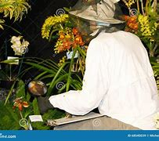

La zoologie, l’étude des animaux, est bien plus qu’une science. Elle est une fenêtre ouverte sur la richesse et la diversité de la vie qui partage notre planète. Elle nous rappelle que nous ne sommes pas seuls, que nous faisons partie d’un réseau complexe où chaque être vivant joue un rôle crucial.
La climatologie, cet art et cette science d'étudier les climats de notre Terre, est au cœur de notre compréhension du monde qui nous entoure et de notre responsabilité envers lui. Elle nous offre un regard profond sur les systèmes complexes qui régissent notre planète, les variations naturelles qui s'y produisent, mais aussi l'empreinte indélébile que nos actions humaines y laissent.
La botanique, cette science dédiée à l'étude des plantes, est bien plus qu'une simple analyse du monde végétal. Elle est une plongée dans les fondations mêmes de la vie sur Terre, une célébration de l'importance des êtres souvent discrets, mais absolument essentiels à notre existence.
La topographie, cette discipline qui consiste à représenter les formes, les reliefs et les caractéristiques de la surface terrestre, est bien plus qu'une science. Elle est une invitation à explorer, à comprendre et à préserver le monde complexe qui nous entoure.
En tant que géographe, le globe est bien plus qu’un simple modèle de notre planète. Il est une représentation fascinante, précise et symbolique, qui nous permet de mieux comprendre les dynamiques physiques et humaines de la Terre. Mesdames et Messieurs, le globe est bien plus qu’un objet. Il est une promesse, un engagement, une vision. Que chacun de nous, en regardant ce symbole, se souvienne que nous avons le pouvoir d’agir pour un monde où tous peuvent prospérer.